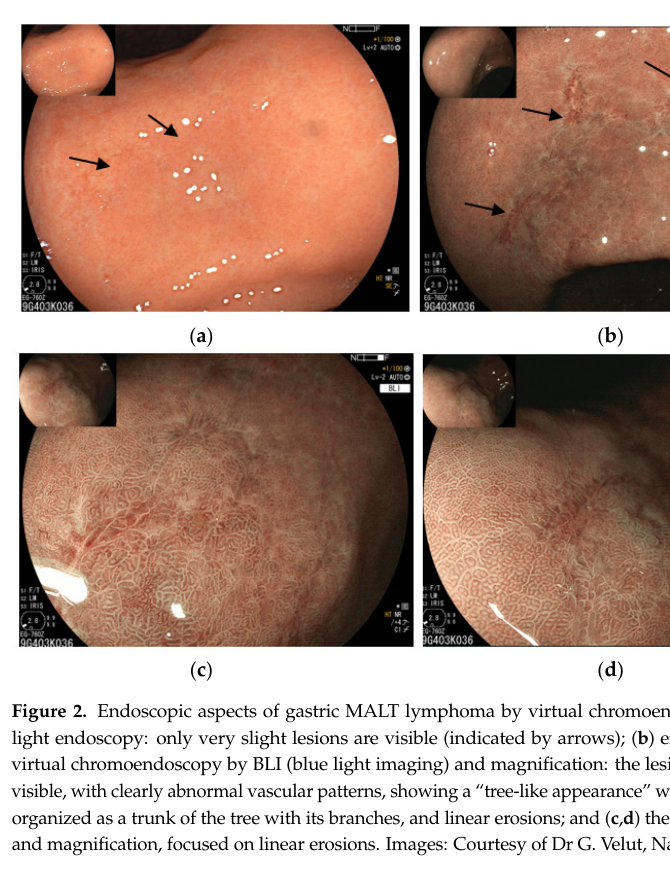

MALT lymphoma (extranodal marginal zone lymphoma of mucosa-associated lymphoid tissue) is an indolent mature B-cell non-Hodgkin lymphoma that arises at extranodal sites of chronic antigenic stimulation. Sustained antigen drive, most classically by Helicobacter pylori in the stomach, or by autoimmune inflammation (Sjogren syndrome, Hashimoto thyroiditis) and other infections, promotes clonal expansion of marginal-zone-derived B cells. A subset acquires recurrent chromosomal translocations that constitutively activate the NF-kB pathway, most notably t(11;18)(q21;q21)/BIRC3::MALT1, t(14;18)(q32;q21)/IGH::MALT1, and t(1;14)(p22;q32)/BCL10::IGH, rendering tumor growth independent of the original antigenic stimulus. Early antigen-dependent disease (e.g. gastric MALT lymphoma without t(11;18)) often regresses after eradication of the driving infection, whereas translocation-positive disease typically requires radiotherapy, anti-CD20 immunotherapy, or systemic therapy.
Ask a research question about MALT Lymphoma. OpenScientist will conduct autonomous deep research using the Disorder Mechanisms Knowledge Base and PubMed literature (typically 10-30 minutes).
Do not include personal health information in your question. Questions and results are cached in your browser's local storage.
name: MALT Lymphoma
creation_date: "2026-06-08T00:00:00Z"
description: >-
MALT lymphoma (extranodal marginal zone lymphoma of mucosa-associated lymphoid
tissue) is an indolent mature B-cell non-Hodgkin lymphoma that arises at
extranodal sites of chronic antigenic stimulation. Sustained antigen drive,
most classically by Helicobacter pylori in the stomach, or by autoimmune
inflammation (Sjogren syndrome, Hashimoto thyroiditis) and other infections,
promotes clonal expansion of marginal-zone-derived B cells. A subset acquires
recurrent chromosomal translocations that constitutively activate the NF-kB
pathway, most notably t(11;18)(q21;q21)/BIRC3::MALT1, t(14;18)(q32;q21)/IGH::MALT1,
and t(1;14)(p22;q32)/BCL10::IGH, rendering tumor growth independent of the
original antigenic stimulus. Early antigen-dependent disease (e.g. gastric MALT
lymphoma without t(11;18)) often regresses after eradication of the driving
infection, whereas translocation-positive disease typically requires
radiotherapy, anti-CD20 immunotherapy, or systemic therapy.
categories:
- Hematologic Malignancy
- B-cell Neoplasm
- Non-Hodgkin Lymphoma
parents:
- B-cell non-Hodgkin lymphoma
- marginal zone lymphoma
disease_term:
preferred_term: MALT lymphoma
term:
id: MONDO:0007650
label: MALT lymphoma
has_subtypes:
- name: Gastric MALT
display_name: Gastric MALT Lymphoma (H. pylori-driven)
description: >-
Most common form, arising in gastric mucosa acquired as MALT in response to
chronic Helicobacter pylori infection. Early-stage, t(11;18)-negative disease
commonly regresses after H. pylori eradication.
- name: t(11;18) MALT
display_name: t(11;18) BIRC3::MALT1 MALT Lymphoma
description: >-
Translocation-defined subset carrying t(11;18)(q21;q21) generating the
BIRC3::MALT1 (API2-MALT1) fusion oncoprotein. Associated with disseminated
disease and resistance to H. pylori eradication.
evidence:
- reference: PMID:21568677
reference_title: "Protease activity of the API2-MALT1 fusion oncoprotein in MALT lymphoma development and treatment."
supports: SUPPORT
evidence_source: HUMAN_CLINICAL
snippet: "The recurrent translocation t(11;18)(q21;q21) is associated with failure to respond to antibiotic therapy and increased rate of dissemination."
explanation: Defines the t(11;18) subtype by its antibiotic resistance and increased dissemination.
- name: Pulmonary MALT
display_name: Pulmonary / BALT Lymphoma
description: >-
MALT lymphoma of bronchus-associated lymphoid tissue, the most common primary
pulmonary lymphoma. Frequently indolent and often associated with t(11;18).
- name: Ocular Adnexal MALT
display_name: Ocular Adnexal MALT Lymphoma
description: >-
MALT lymphoma of the conjunctiva, orbit, and lacrimal gland, in some regions
associated with Chlamydia psittaci infection.
- name: Salivary Gland MALT
display_name: Salivary Gland MALT Lymphoma
description: >-
MALT lymphoma of salivary gland tissue, strongly associated with Sjogren
syndrome and chronic lymphoepithelial sialadenitis.
evidence:
- reference: PMID:28288723
reference_title: "Clinical features and management of non-gastrointestinal non-ocular extranodal mucosa associated lymphoid tissue (ENMALT) marginal zone lymphomas."
supports: SUPPORT
evidence_source: HUMAN_CLINICAL
snippet: "These lymphomas usually arise in a setting of inflammation due to a persistent infection or autoimmune diseases such as Sjogren syndrome in salivary MALT lymphomas and Hashimoto's thryroiditis in thyroid lymphomas."
explanation: Links salivary gland MALT lymphoma to Sjogren syndrome-associated chronic inflammation.
pathophysiology:
- name: Chronic Antigenic Stimulation
description: >-
Persistent infection (most classically H. pylori in the stomach) or chronic
autoimmune inflammation drives sustained antigen-dependent stimulation of
B cells at extranodal sites, creating acquired mucosa-associated lymphoid
tissue and a microenvironment that promotes B-cell proliferation and survival.
evidence:
- reference: PMID:21568677
reference_title: "Protease activity of the API2-MALT1 fusion oncoprotein in MALT lymphoma development and treatment."
supports: SUPPORT
evidence_source: HUMAN_CLINICAL
snippet: "Gastric mucosa-associated lymphoid tissue (MALT) lymphoma is a prototypical cancer that occurs in the setting of chronic inflammation and an important model for understanding how deregulated NF-κB transcriptional activity contributes to malignancy."
explanation: Review establishes that gastric MALT lymphoma arises in the setting of chronic inflammation.
cell_types:
- preferred_term: marginal zone B cell
term:
id: CL:0009060
label: marginal zone B cell of lymph node
biological_processes:
- preferred_term: inflammatory response
modifier: INCREASED
term:
id: GO:0006954
label: inflammatory response
downstream:
- target: Antigen-Driven Clonal B-cell Expansion
description: Sustained antigenic and T-cell help drives clonal selection of marginal-zone B cells
- name: Antigen-Driven Clonal B-cell Expansion
description: >-
Chronic B-cell receptor signaling and T-helper-cell-derived signals select
and expand a clonal population of marginal-zone-derived memory B cells. At
this stage proliferation remains dependent on the antigenic stimulus, which
is why early gastric MALT lymphoma can regress after antigen removal.
evidence:
- reference: PMID:21568677
reference_title: "Protease activity of the API2-MALT1 fusion oncoprotein in MALT lymphoma development and treatment."
supports: SUPPORT
evidence_source: HUMAN_CLINICAL
snippet: "Most gastric MALT lymphomas require ongoing antigenic stimulation for continued tumor growth, and Stage I disease is usually cured by eradicating the causative microorganism, Helicobacter pylori, with antibiotics."
explanation: Establishes that early MALT lymphoma growth remains dependent on ongoing antigenic stimulation.
cell_types:
- preferred_term: marginal zone B cell
term:
id: CL:0009060
label: marginal zone B cell of lymph node
biological_processes:
- preferred_term: B cell receptor signaling pathway
modifier: INCREASED
term:
id: GO:0050853
label: B cell receptor signaling pathway
- preferred_term: B cell proliferation
modifier: INCREASED
term:
id: GO:0042100
label: B cell proliferation
downstream:
- target: NF-kB-Activating Translocations
description: Genetic instability during chronic proliferation favors acquisition of NF-kB-activating translocations
- name: NF-kB-Activating Translocations
description: >-
A subset of tumors acquires recurrent chromosomal translocations that
converge on the BCL10-MALT1 signaling axis and constitutively activate NF-kB:
t(11;18)(q21;q21)/BIRC3::MALT1, t(14;18)(q32;q21)/IGH::MALT1, and
t(1;14)(p22;q32)/BCL10::IGH. These lesions render lymphoma growth independent
of the original antigenic stimulus.
evidence:
- reference: PMID:15694184
reference_title: "Update on MALT lymphomas."
supports: SUPPORT
evidence_source: HUMAN_CLINICAL
snippet: "Three translocations, t(11;18)(q21;q21), t(1;14)(p22;q32) and t(14;18)(q32;q21) are specifically associated with MALT lymphoma and the genes involved have been identified."
explanation: Identifies the three recurrent MALT lymphoma translocations.
- reference: PMID:15694184
reference_title: "Update on MALT lymphomas."
supports: SUPPORT
evidence_source: HUMAN_CLINICAL
snippet: "These three chromosomal translocations that involve different genes appear to share common oncogenic properties by targeting the same nuclear factor kappa B (NF kappa B) oncogenic pathway."
explanation: Establishes that the translocations converge on constitutive NF-kB activation.
cell_types:
- preferred_term: marginal zone B cell
term:
id: CL:0009060
label: marginal zone B cell of lymph node
biological_processes:
- preferred_term: canonical NF-kappaB signal transduction
modifier: INCREASED
term:
id: GO:0007249
label: canonical NF-kappaB signal transduction
downstream:
- target: Antigen-Independent Lymphoma Growth
description: Constitutive NF-kB signaling sustains proliferation and survival without antigen
- name: Antigen-Independent Lymphoma Growth
description: >-
Constitutive NF-kB activation drives expression of anti-apoptotic and
proliferative target genes, sustaining tumor B-cell survival and growth
independent of the original antigenic stimulus. This explains the failure of
antigen/antibiotic-directed therapy in translocation-positive disease.
evidence:
- reference: PMID:21568677
reference_title: "Protease activity of the API2-MALT1 fusion oncoprotein in MALT lymphoma development and treatment."
supports: SUPPORT
evidence_source: HUMAN_CLINICAL
snippet: "in a subset of MALT lymphomas, chromosomal translocations are acquired that render the lymphoma antigen-independent. The recurrent translocation t(11;18)(q21;q21) is associated with failure to respond to antibiotic therapy and increased rate of dissemination."
explanation: Establishes that translocation-positive MALT lymphoma becomes antigen-independent and resistant to antibiotic therapy.
cell_types:
- preferred_term: marginal zone B cell
term:
id: CL:0009060
label: marginal zone B cell of lymph node
biological_processes:
- preferred_term: B cell proliferation
modifier: INCREASED
term:
id: GO:0042100
label: B cell proliferation
- preferred_term: apoptotic process
modifier: DECREASED
term:
id: GO:0006915
label: apoptotic process
phenotypes:
- category: Clinical
name: Lymphadenopathy
description: Regional or disseminated lymph node involvement in advanced disease.
phenotype_term:
preferred_term: Lymphadenopathy
term:
id: HP:0002716
label: Lymphadenopathy
evidence:
- reference: PMID:28288723
reference_title: "Clinical features and management of non-gastrointestinal non-ocular extranodal mucosa associated lymphoid tissue (ENMALT) marginal zone lymphomas."
supports: PARTIAL
evidence_source: HUMAN_CLINICAL
snippet: "Patients often present with localised stage I or II although disseminated disease may be present at diagnosis or relapse in a third of the cases."
explanation: Supports nodal/disseminated involvement in a subset of MALT lymphoma patients.
- category: Clinical
name: Epigastric Pain
description: >-
Nonspecific epigastric pain is the most common presenting symptom of gastric
MALT lymphoma.
phenotype_term:
preferred_term: Epigastric pain
term:
id: HP:0410019
label: Epigastric pain
evidence:
- reference: PMID:9646819
reference_title: "Gastric mucosa-associated lymphoid tissue lymphoma: radiographic findings in six patients."
supports: SUPPORT
evidence_source: HUMAN_CLINICAL
snippet: "The most common clinical findings at presentation included epigastric pain (n = 6), dyspepsia (n = 4), and nausea and vomiting (n = 4)."
explanation: Epigastric pain was the most frequent presenting symptom in gastric MALT lymphoma patients.
- category: Clinical
name: Dyspepsia
description: >-
Dyspepsia is a common nonspecific presenting symptom of gastric MALT
lymphoma, reflecting the indolent mucosal involvement of the stomach.
phenotype_term:
preferred_term: Dyspepsia
term:
id: HP:0410281
label: Dyspepsia
evidence:
- reference: PMID:9646819
reference_title: "Gastric mucosa-associated lymphoid tissue lymphoma: radiographic findings in six patients."
supports: SUPPORT
evidence_source: HUMAN_CLINICAL
snippet: "The most common clinical findings at presentation included epigastric pain (n = 6), dyspepsia (n = 4), and nausea and vomiting (n = 4)."
explanation: Dyspepsia was a common presenting symptom in gastric MALT lymphoma patients.
genetic:
- name: BIRC3/MALT1 Translocation
gene_term:
preferred_term: MALT1
term:
id: hgnc:6819
label: MALT1
association: Defining Genetic Lesion
notes: >-
t(11;18)(q21;q21) fuses BIRC3 (API2) to MALT1, generating a chimeric
oncoprotein that constitutively activates NF-kB.
evidence:
- reference: PMID:21568677
reference_title: "Protease activity of the API2-MALT1 fusion oncoprotein in MALT lymphoma development and treatment."
supports: SUPPORT
evidence_source: HUMAN_CLINICAL
snippet: "This translocation creates the API2-MALT1 fusion oncoprotein, which comprises the amino terminus of inhibitor of apoptosis 2 (API2 or cIAP2) fused to the carboxy terminus of MALT1."
explanation: Describes the BIRC3 (API2)-MALT1 fusion oncoprotein created by t(11;18).
- name: BCL10 Translocation
gene_term:
preferred_term: BCL10
term:
id: hgnc:989
label: BCL10
association: Recurrent Genetic Lesion
notes: >-
t(1;14)(p22;q32) juxtaposes BCL10 to the IGH locus, deregulating BCL10
expression and constitutively activating the BCL10-MALT1-NF-kB axis.
evidence:
- reference: PMID:15694184
reference_title: "Update on MALT lymphomas."
supports: SUPPORT
evidence_source: HUMAN_CLINICAL
snippet: "T(1;14) and t(14;18) deregulate BCL10 and MALT1 expression, respectively."
explanation: Identifies t(1;14)-mediated deregulation of BCL10 expression in MALT lymphoma.
treatments:
- name: Helicobacter pylori Eradication
description: >-
Antibiotic-based H. pylori eradication is first-line therapy for early-stage
gastric MALT lymphoma and induces lymphoma regression in a majority of
t(11;18)-negative cases.
treatment_term:
preferred_term: antibiotic therapy
term:
id: NCIT:C15620
label: Antibiotic Therapy
evidence:
- reference: PMID:37122607
reference_title: "Effectiveness of Helicobacter pylori eradication in the treatment of early-stage gastric mucosa-associated lymphoid tissue lymphoma: An up-to-date meta-analysis."
supports: SUPPORT
evidence_source: HUMAN_CLINICAL
snippet: "The pooled CR of H. pylori-positive early-stage GML after bacterial eradication was 75.18% (95%CI: 70.45%-79.91%)."
explanation: Meta-analysis quantifies complete remission of early-stage gastric MALT lymphoma after H. pylori eradication.
- reference: PMID:37122607
reference_title: "Effectiveness of Helicobacter pylori eradication in the treatment of early-stage gastric mucosa-associated lymphoid tissue lymphoma: An up-to-date meta-analysis."
supports: SUPPORT
evidence_source: HUMAN_CLINICAL
snippet: "Meta-regression analysis identified statistically significant effect modifiers, including the proportion of patients with t(11;18)(q21;q21)-positive GML and the risk of bias in each study."
explanation: Shows that t(11;18) positivity modifies the response to eradication therapy.
- name: Radiotherapy
description: >-
Involved-site radiotherapy is highly effective for localized MALT lymphoma,
including antibiotic-unresponsive gastric disease and non-gastric sites.
treatment_term:
preferred_term: radiation therapy
term:
id: MAXO:0000014
label: radiation therapy
evidence:
- reference: PMID:39448038
reference_title: "Reduced-dose Radiation Therapy for Stage IE Gastric Mucosa-Associated Lymphoid Tissue Lymphoma: A Multi-Institutional Prospective Study (KROG 16-18)."
supports: SUPPORT
evidence_source: HUMAN_CLINICAL
snippet: "Definitive radiation therapy (RT) of 30 Gy or higher is commonly recommended to treat Helicobacter pylori-independent gastric mucosa-associated lymphoid tissue (MALT) lymphoma with an excellent disease control rate."
explanation: Establishes radiotherapy as standard therapy for H. pylori-independent gastric MALT lymphoma with excellent control.
- reference: PMID:39448038
reference_title: "Reduced-dose Radiation Therapy for Stage IE Gastric Mucosa-Associated Lymphoid Tissue Lymphoma: A Multi-Institutional Prospective Study (KROG 16-18)."
supports: SUPPORT
evidence_source: HUMAN_CLINICAL
snippet: "The 6-month CR rate was 96.7%."
explanation: Prospective trial demonstrates high complete remission rate with radiotherapy for stage IE gastric MALT lymphoma.
- name: Rituximab
description: >-
Anti-CD20 monoclonal antibody used alone or with chemotherapy for
disseminated or relapsed MALT lymphoma.
therapeutic_modality: MONOCLONAL_ANTIBODY
treatment_term:
preferred_term: Pharmacotherapy
term:
id: NCIT:C15986
label: Pharmacotherapy
therapeutic_agent:
- preferred_term: rituximab
term:
id: NCIT:C1702
label: Rituximab
evidence:
- reference: PMID:28355112
reference_title: "Final Results of the IELSG-19 Randomized Trial of Mucosa-Associated Lymphoid Tissue Lymphoma: Improved Event-Free and Progression-Free Survival With Rituximab Plus Chlorambucil Versus Either Chlorambucil or Rituximab Monotherapy."
supports: SUPPORT
evidence_source: HUMAN_CLINICAL
snippet: "Rituximab in combination with chlorambucil demonstrated superior efficacy in mucosa-associated lymphoid tissue lymphoma"
explanation: Randomized IELSG-19 trial shows rituximab plus chlorambucil improves outcomes in MALT lymphoma.
clinical_trials:
- name: NCT00210353
phase: PHASE_III
status: COMPLETED
description: >-
IELSG-19, a multicenter randomized phase III trial comparing chlorambucil
monotherapy, rituximab monotherapy, and the chlorambucil plus rituximab
combination as first-line systemic therapy for extranodal marginal zone
(MALT) lymphoma.
evidence:
- reference: clinicaltrials:NCT00210353
supports: SUPPORT
snippet: "determine whether the addition of Rituximab to Chlorambucil will improve the outcome of MALT lymphoma in comparison to treatment with Chlorambucil alone"
explanation: ClinicalTrials.gov summary confirms IELSG-19 tested adding rituximab to chlorambucil in MALT lymphoma.
Question: You are an expert researcher providing comprehensive, well-cited information.
Provide detailed information focusing on: 1. Key concepts and definitions with current understanding 2. Recent developments and latest research (prioritize 2023-2024 sources) 3. Current applications and real-world implementations 4. Expert opinions and analysis from authoritative sources 5. Relevant statistics and data from recent studies
Format as a comprehensive research report with proper citations. Include URLs and publication dates where available. Always prioritize recent, authoritative sources and provide specific citations for all major claims.
Please provide a comprehensive research report on MALT Lymphoma covering all of the disease characteristics listed below. This report will be used to populate a disease knowledge base entry. Be thorough and cite primary literature (PMID preferred) for all claims.
For each section, suggested databases/resources are listed. These are the first places you should search for information on each topic.
Search first: OMIM, Orphanet, ICD-10/ICD-11, MeSH, PubMed
Search first: PubMed, Cochrane Library, UpToDate, clinical guidelines, ClinVar, ClinGen, GWAS Catalog, PheGenI, CTD, CDC, WHO, epidemiological databases
Search first: PubMed, Cochrane Library, clinical trial databases, GWAS Catalog, gnomAD, WHO, CDC, nutrition databases
Search first: CTD, PubMed, PheGenI, GxE databases
Search first: HPO (Human Phenotype Ontology), OMIM, Orphanet, PubMed, clinicaltrials.gov, MedDRA, SNOMED CT, DECIPHER, LOINC
For each phenotype, provide: - Phenotype type: symptoms, clinical signs, physical manifestations, behavioral changes, or laboratory abnormalities
For symptoms/signs: HPO, OMIM, Orphanet, PubMed For behavioral changes: HPO, DSM, RDoC (Research Domain Criteria), PubMed For laboratory abnormalities: LOINC, SNOMED CT, LabTests Online, PubMed - Phenotype characteristics: Search first: OMIM, Orphanet, HPO, PubMed - Age of symptom onset (neonatal, childhood, adult-onset, late-onset) - Symptom severity (mild, moderate, severe, variable) - Symptom progression (stable, progressive, episodic, fluctuating) - Frequency among affected individuals (percentage or qualitative) - Quality of life impact: Effects on daily functioning and well-being (per-phenotype when possible) Search first: EQ-5D database, SF-36, WHO QOL databases, PubMed - Suggest HPO (Human Phenotype Ontology) terms for each phenotype
Search first: OMIM, ClinVar, HGMD, Ensembl, NCBI Gene
Search first: ENCODE, Roadmap Epigenomics, MethBase, DiseaseMeth
Search first: DECIPHER, ClinVar, ECARUCA, UCSC Genome Browser
Search first: CTD (Comparative Toxicogenomics Database), TOXNET, PubMed, EPA databases
Search first: CDC databases, WHO, PubMed, NHANES
Search first: NCBI Taxonomy, ViPR, BV-BRC, MicrobeDB, GIDEON
Search first: KEGG, Reactome, WikiPathways, PathBank, BioCyc
Search first: Gene Ontology (GO), Reactome, KEGG, PubMed
Search first: UniProt, PDB (Protein Data Bank), InterPro, Pfam, AlphaFold
Search first: KEGG, BioCyc, HMDB (Human Metabolome Database), BRENDA
Search first: ImmPort, Immunome Database, IEDB, Gene Ontology
Search first: PubMed, Gene Ontology, Reactome
Search first: BRENDA, UniProt, KEGG, OMIM, PubMed
Search first: ENCODE, Roadmap Epigenomics, MethBase, DiseaseMeth
For each mechanism, describe: - The causal chain from initial trigger to clinical manifestation - Which mechanisms are upstream vs downstream - What cell types and biological processes are involved - Suggest GO terms for biological processes and CL terms for cell types
Search first: Uberon, FMA (Foundational Model of Anatomy), OMIM, HPO, ICD-11, MeSH, SNOMED CT
Search first: Uberon, Human Protein Atlas, Cell Ontology, Human Cell Atlas, CellMarker, PanglaoDB
Search first: Gene Ontology (Cellular Component), UniProt, Human Protein Atlas
Search first: OMIM, Orphanet, HPO, PubMed
Search first: Disease registries, longitudinal cohort databases, natural history studies, PubMed, Orphanet, OMIM
Search first: Orphanet, CDC, WHO, GBD (Global Burden of Disease), national registries, SEER, disease registries
Search first: GTR (Genetic Testing Registry), GeneReviews, ClinGen
For each treatment, suggest MAXO (Medical Action Ontology) terms where applicable.
Search first: CDC vaccine schedules, WHO immunization, FDA vaccine database
Search first: CDC, WHO, behavioral intervention databases, Cochrane Library
Search first: NSGC resources, ACMG guidelines, GeneReviews
Search first: Clinical guidelines, FDA approvals, PubMed
Search first: NCBI Taxonomy
Search first: VBO (Vertebrate Breed Ontology)
Search first: NCBI Gene
Structure your response as a comprehensive narrative organized by the sections above. For each section, provide: - Factual content with specific details (numbers, percentages, gene names, variant nomenclature) - Ontology term suggestions (HPO, GO, CL, UBERON, CHEBI, MAXO, MONDO) where applicable - Evidence citations with PMIDs - Direct quotes from abstracts to support key claims - Clear indication when information is not available or not applicable for this disease
This report will be used to populate a disease knowledge base entry with: - Pathophysiology descriptions with causal chains - Gene/protein annotations (HGNC, GO terms) - Phenotype associations (HP terms) with frequencies - Cell type involvement (CL terms) - Anatomical locations (UBERON terms) - Chemical entities (CHEBI terms) - Treatment annotations (MAXO terms) - Evidence items with PMIDs and exact abstract quotes - Epidemiology, prognosis, diagnostic, and prevention information - Animal model descriptions with phenotype recapitulation details
MALT lymphoma is an indolent extranodal marginal zone B‑cell lymphoma that arises from marginal zone B cells in acquired mucosa-associated lymphoid tissue that develops under chronic antigenic stimulation (infection or autoimmunity) (raderer2023clinicalrelevanceof pages 1-2, alderuccio2023enhancingprognosticationand pages 1-3, walewska2023guidelineforthe pages 2-2).
The retrieved papers did not contain specific ICD‑10/ICD‑11, MeSH, OMIM, Orphanet, or MONDO codes in the accessible text excerpts; therefore, identifiers are not reported here to avoid incorrect mapping.
The information summarized is derived from aggregated disease-level resources (guidelines, systematic reviews, multi-center/real-world cohorts, and mechanistic studies) rather than individual EHR extracts (walewska2023guidelineforthe pages 9-9, lemos2023effectivenessofhelicobacter pages 1-3, min2023longtermclinicaloutcomes pages 7-8, tsai2024cooperativeparticipationof pages 1-2).
Representative abstract quote (definition): A 2023 review describes EMZL/MALT as “an indolent lymphoma originating from marginal zone B‑cells and associated with chronic inflammation” (alderuccio2023enhancingprognosticationand pages 1-3).
MALT lymphomagenesis is strongly linked to chronic antigenic stimulation at the involved mucosal site, with subsequent acquisition of genetic alterations that often converge on NF‑κB signaling (raderer2023clinicalrelevanceof pages 1-2, alderuccio2023enhancingprognosticationand pages 1-3).
Autoimmune disorders create chronic inflammatory niches and are repeatedly cited as associated contexts for EMZL/MALT, including Sjögren’s syndrome and Hashimoto thyroiditis (alderuccio2023enhancingprognosticationand pages 1-3, alderuccio2023enhancingprognosticationand pages 17-19).
The retrieved evidence did not provide validated protective genetic variants or environmental protective factors specific to MALT lymphoma.
A major gene–environment interaction in MALT lymphoma is the transition from antigen-dependent (infection-driven) growth to antigen-independent growth mediated by tumor genetics: - t(11;18)(q21;q21)/BIRC3::MALT1 (API2–MALT1) is associated with poor response to H. pylori eradication and more disseminated gastric disease, suggesting reduced dependence on H. pylori-driven stimulation (raderer2023clinicalrelevanceof pages 1-2, matysiakbudnik2023clinicalmanagementof pages 8-9).
MALT lymphoma is typically indolent, often localized, and symptoms may reflect the involved organ rather than systemic B symptoms (alderuccio2023enhancingprognosticationand pages 1-3, matysiakbudnik2023clinicalmanagementof pages 8-9).
Suggested HPO terms (examples): - Dyspepsia (HP:0100749) - Epigastric pain (HP:0030819) - Gastric ulcer (HP:0002592) - Nausea (HP:0002018) - Gastrointestinal hemorrhage (HP:0002239) (when present)
Ocular adnexal MALT is a common extranodal site; site biology and prognosis vary, and infections/IgG4-related disease can be part of differential/associated context (walewska2023guidelineforthe pages 3-3, alderuccio2023enhancingprognosticationand pages 4-6).
Suggested HPO terms (site-dependent; examples): - Conjunctival mass (HP:0100787) - Proptosis (HP:0000520) - Diplopia (HP:0000651)
The retrieved evidence did not provide validated QoL instrument data (e.g., EQ‑5D/SF‑36) specific to MALT lymphoma; however, the BSH guideline emphasizes monitoring toxicity via patient-reported outcomes in trials and practice contexts (alderuccio2023enhancingprognosticationand pages 16-17).
Across sites, many genetic changes dysregulate pathways leading to NF‑κB activation, consistent with a chronic inflammation/antigen stimulation model (raderer2023clinicalrelevanceof pages 1-2, alderuccio2023enhancingprognosticationand pages 1-3).
The 2023 expert review highlights recurrent alterations in ocular adnexal EMZL (e.g., CABIN1, RHOA, TBL1XR1, CREBBP) and TNFAIP3 inactivation, with frequent concurrent BCR and NF‑κB pathway lesions (alderuccio2023enhancingprognosticationand pages 4-6).
No comprehensive epigenomic profiling (methylation/histone) for MALT lymphoma was retrievable in the current evidence excerpts; Tsai et al. note that some lymphomas show epigenetic suppression of the NFATC1 promoter (contextual statement) (tsai2024cooperativeparticipationof pages 15-16).
No robust lifestyle/environmental exposure risk factors (e.g., smoking, diet) specific to MALT lymphoma were identified in the retrieved evidence.
Primary environmental drivers are infectious/inflammatory exposures: - Helicobacter pylori (gastric) - Non‑H. pylori Helicobacter species (subset of “true” H. pylori-negative gastric MALT) - Campylobacter jejuni (intestinal) - Chlamydia psittaci (ocular adnexal; geographic variation) - HCV/HBV (hepatic/extranodal contexts) (walewska2023guidelineforthe pages 3-3, matysiakbudnik2023clinicalmanagementof pages 7-8).
A 2024 mechanistic study (Tsai et al., Cancer Cell International, Nov 2024; https://doi.org/10.1186/s12935-024-03552-6) provides a model linking H. pylori virulence factor CagA to host signaling and clinical response: - In vitro co-culture model: B-lymphoma cell lines (MA-1, OCI-Ly3, OCI-Ly7, etc.) exposed to patient-derived H. pylori strains; CagA becomes tyrosine-phosphorylated and translocates to the nucleus, coinciding with NFATc1 dephosphorylation and nuclear translocation; this was linked to signaling (p-SHP-2/p-ERK/Bcl-xL) and induction of p21/p27 with G1 cell-cycle retardation (tsai2024cooperativeparticipationof pages 1-2, tsai2024cooperativeparticipationof pages 4-6). - Drug perturbation: NFATc1 nuclear translocation depended on calcineurin (blocked by cyclosporine A), and clarithromycin reduced CagA/p-CagA and reversed NFATc1 nuclear localization (tsai2024cooperativeparticipationof pages 4-6). - Clinical correlation (n=91): nuclear NFATc1 associated with tumor CagA presence (80% vs 33%, p<0.001) and with H. pylori eradication responsiveness (73% vs 25%, p<0.001); CagA expression independently associated with response (OR ~11.9, p<0.001), with combined CagA+NFATc1 high PPV (~90.5%) and specificity (~87.5%) (tsai2024cooperativeparticipationof pages 1-2, tsai2024cooperativeparticipationof pages 11-13).
Implication: This provides a mechanistic explanation for a subset of “antibiotic-responsive” gastric MALT lymphoma, where bacterial factors directly modulate lymphoma cell signaling and cell-cycle programs, and suggests potential biomarkers (CagA, NFATc1 localization) for predicting eradication response (tsai2024cooperativeparticipationof pages 11-13).
Common primary sites include stomach, ocular adnexa, lung, salivary glands, and skin (raderer2023clinicalrelevanceof pages 1-2, alderuccio2023enhancingprognosticationand pages 1-3).
Suggested UBERON terms (examples): - Stomach (UBERON:0000945) - Conjunctiva (UBERON:0000970) - Lacrimal gland (UBERON:0001817) - Lung (UBERON:0002048) - Major salivary gland (UBERON:0001830) - Skin (UBERON:0002097)
Tumors are composed of heterogeneous small B cells with marginal zone/centrocyte-like morphology (walewska2023guidelineforthe pages 2-2), infiltrating mucosa-associated lymphoid structures (acquired MALT).
MALT lymphoma is typically indolent, with prolonged natural history and frequent presentation at localized stage (raderer2023clinicalrelevanceof pages 1-2, matysiakbudnik2023clinicalmanagementof pages 8-9).
MALT lymphoma is not described as a Mendelian inherited disorder in the retrieved evidence; it is primarily a somatic malignancy driven by acquired genetic lesions in the context of chronic inflammation (raderer2023clinicalrelevanceof pages 1-2).
Not available from current evidence: incidence per 100,000/year, prevalence, sex ratio, and age distributions from registries (e.g., SEER/GBD). These are important for a knowledge base but were not extractable from retrieved full text here.
Typical gastric MALT histology includes marginal-zone pattern infiltration around B‑cell follicles with confluent sheets and lymphoepithelial lesions; plasma cell differentiation occurs in up to ~33% (matysiakbudnik2023clinicalmanagementof pages 4-7).
Typical phenotype described for gastric MALT: - CD20+, BCL2+, CD10−, BCL6−, CD5−, cyclin D1−, SOX11−, CD23−, IgD−, usually IgM+; low Ki‑67 (matysiakbudnik2023clinicalmanagementof pages 4-7). Guideline emphasizes IHC is primarily used to exclude other small B‑cell lymphomas because “no widely specific diagnostic markers for MZL” exist (walewska2023guidelineforthe pages 2-2).
BSH guideline synthesis: overall gastric EMZL/MALT prognosis is excellent with >90% 5‑year survival and ~75–80% 10‑year survival (walewska2023guidelineforthe pages 9-9).
A 2024 prospective cohort and meta-analysis reported pooled histologic transformation cumulative incidence in MZL overall of ~5% at 5 years and ~8% at 10 years; for EMZL/MALT approximately ~3% at 5 years and ~5% at 10 years (bommier2024transformationinmarginal pages 1-2). Transformation was associated with an approximately 3.95-fold increased risk of death (bommier2024transformationinmarginal pages 1-2).
No population-level primary prevention trials specific to MALT lymphoma were found in the retrieved evidence; however, infection control (H. pylori diagnosis/treatment) is central to reducing chronic gastritis-associated lymphomagenesis in gastric disease contexts (matysiakbudnik2023clinicalmanagementof pages 1-2, matysiakbudnik2023clinicalmanagementof pages 8-9).
The retrieved evidence did not provide veterinary natural history of MALT lymphoma in other species.
Tsai et al. used B‑lymphoma cell lines co-cultured with patient-derived H. pylori strains to define the CagA–NFATc1 signaling axis and its suppression by clarithromycin or calcineurin inhibition (tsai2024cooperativeparticipationof pages 4-6).
Tsai et al. note experimental evidence that transgenic mouse expression of CagA can drive gastrointestinal and hematopoietic neoplasms, supporting a causal role for bacterial virulence factors in lymphomagenesis (tsai2024cooperativeparticipationof pages 15-16).
Endoscopic phenotypes of gastric MALT lymphoma, including the “tree-like appearance” vascular pattern under enhanced imaging, are shown in the cited figures (matysiakbudnik2023clinicalmanagementof media 18e4f906).
| Domain | Key points | Key recent sources (URL; publication date) | Evidence citation IDs |
|---|---|---|---|
| Definition/Identifiers | MALT lymphoma is an indolent extranodal marginal zone B-cell lymphoma arising from marginal zone B cells in acquired mucosa-associated lymphoid tissue under chronic antigenic stimulation. It accounts for >60% of marginal zone lymphomas and up to ~8% of newly diagnosed lymphomas. Common primary sites include stomach (~30–40%), ocular adnexa (~12–24%), skin (~10%), lung (~9–11%), and salivary gland (~7–11%). | Raderer et al., Ther Adv Med Oncol; https://doi.org/10.1177/17588359231183565; Jan 2023. Alderuccio & Lossos, Expert Rev Hematol; https://doi.org/10.1080/17474086.2023.2206557; Apr 2023. Walewska et al., Br J Haematol; https://doi.org/10.1111/bjh.19064; Nov 2023. | (raderer2023clinicalrelevanceof pages 1-2, alderuccio2023enhancingprognosticationand pages 1-3, walewska2023guidelineforthe pages 2-2) |
| Etiology | Strongly linked to chronic inflammation/infection. Gastric disease is associated with Helicobacter pylori in ~38–85% of cases; H. heilmannii <1%. Other site-specific associations include Campylobacter jejuni (up to 50%) in intestinal disease, Chlamydia psittaci in ocular adnexal disease (geographically variable), and autoimmune disorders such as Sjögren syndrome and Hashimoto thyroiditis. HCV is reported in some hepatic/other extranodal cases. | Walewska et al.; https://doi.org/10.1111/bjh.19064; Nov 2023. Alderuccio & Lossos; https://doi.org/10.1080/17474086.2023.2206557; Apr 2023. Matysiak-Budnik et al.; https://doi.org/10.3390/cancers15153811; Jul 2023. | (walewska2023guidelineforthe pages 3-3, alderuccio2023enhancingprognosticationand pages 17-19, matysiakbudnik2023clinicalmanagementof pages 16-17, matysiakbudnik2023clinicalmanagementof pages 1-2) |
| Molecular genetics | Recurrent lesions converge on NF-κB activation. The translocation t(11;18)(q21;q21)/BIRC3::MALT1 (API2-MALT1) is relatively specific and occurs in ~24% of gastric and ~40% of pulmonary MALT lymphoma; in gastric disease guideline tables report ~6–26%. It is associated with more disseminated disease and poor response to H. pylori eradication. Other recurrent abnormalities include t(14;18)(IGH::MALT1) ~1–5%, trisomy 3 ~11%, trisomy 18 ~6%, and TNFAIP3/A20 inactivation ~5–18% in gastric MALT. | Raderer et al.; https://doi.org/10.1177/17588359231183565; Jan 2023. Walewska et al.; https://doi.org/10.1111/bjh.19064; Nov 2023. Yang et al.; https://doi.org/10.1186/s43556-023-00141-3; Sep 2023. | (raderer2023clinicalrelevanceof pages 1-2, walewska2023guidelineforthe pages 3-3, yang2023extranodallymphomapathogenesis pages 28-29, matysiakbudnik2023clinicalmanagementof pages 4-7, walewska2023guidelineforthe pages 7-7) |
| Diagnostics | Diagnosis is biopsy-based. Recommended gastric workup includes upper endoscopy with biopsies; at least 10 biopsies from lesions and surrounding mucosa are suggested. Histology shows marginal-zone pattern infiltration with lymphoepithelial lesions; plasma cell differentiation may be seen in up to ~33%. Typical immunophenotype: CD20+, BCL2+, CD10−, BCL6−, CD5−, cyclin D1−, SOX11−, CD23−, IgD−, usually IgM+. FISH for t(11;18) is recommended in all gastric cases in the BSH guideline. Bone marrow involvement is uncommon (~4.3%), so marrow biopsy is not routine unless cytopenias are present. FDG-PET avidity is variable (~50–60%). | Matysiak-Budnik et al.; https://doi.org/10.3390/cancers15153811; Jul 2023. Walewska et al.; https://doi.org/10.1111/bjh.19064; Nov 2023. Alderuccio & Lossos; https://doi.org/10.1080/17474086.2023.2206557; Apr 2023. | (matysiakbudnik2023clinicalmanagementof pages 4-7, walewska2023guidelineforthe pages 7-7, walewska2023guidelineforthe pages 2-3, alderuccio2023enhancingprognosticationand pages 1-3, matysiakbudnik2023clinicalmanagementof pages 2-4) |
| Treatment/outcomes | For early-stage H. pylori-positive gastric MALT, eradication is first-line. A 2023 meta-analysis of 2,936 successfully eradicated H. pylori-positive patients found pooled complete histopathologic remission 75.18% (95% CI 70.45–79.91). The 2023 BSH guideline notes ~62% CR by 12 months after eradication, with late responses up to 1 year. In a 2023 real-world series, CR after eradication in localized H. pylori-positive disease was 77.8% (112/144). Radiotherapy for H. pylori-independent/localized disease achieved 100% CR in H. pylori-negative first-line cohorts in that study; older referenced RT series reported 5- and 10-year OS 94% and 79%, and the BSH guideline summarizes overall prognosis as >90% 5-year survival and 75–80% 10-year survival. | Lemos et al., World J Gastroenterol; https://doi.org/10.3748/wjg.v29.i14.2202; Apr 2023. Min et al., Ann Hematol; https://doi.org/10.1007/s00277-023-05130-8; Feb 2023. Walewska et al.; https://doi.org/10.1111/bjh.19064; Nov 2023. | (walewska2023guidelineforthe pages 9-9, min2023longtermclinicaloutcomes pages 8-9, lemos2023effectivenessofhelicobacter pages 1-3, min2023longtermclinicaloutcomes pages 7-8) |
| Transformation | Histologic transformation is uncommon but clinically important. In the 2024 prospective cohort/meta-analysis of MZL, pooled cumulative incidence was ~5% at 5 years and ~8% at 10 years overall; for EMZL/MALT, pooled incidence was about ~3% at 5 years and ~5% at 10 years. Transformation was associated with a 3.95-fold increased risk of death. Reported predictors included ≥2 extranodal sites, Ann Arbor stage III/IV, elevated LDH, and MALT-IPI ≥2. | Bommier et al., Blood Advances; https://doi.org/10.1182/bloodadvances.2024013188; Nov 2024. Alderuccio & Lossos; https://doi.org/10.1080/17474086.2023.2206557; Apr 2023. | (bommier2024transformationinmarginal pages 8-9, bommier2024transformationinmarginal pages 5-6, bommier2024transformationinmarginal pages 1-2, alderuccio2023enhancingprognosticationand pages 20-21) |
Table: This table summarizes high-yield, evidence-supported facts on MALT lymphoma across definition, etiology, molecular genetics, diagnosis, treatment, and transformation. It prioritizes 2023–2024 sources and includes quantitative findings and context IDs for traceability.
References
(walewska2023guidelineforthe pages 2-2): Renata Walewska, Toby A. Eyre, Sally Barrington, Jessica Brady, Paul Fields, Sunil Iyengar, Anurag Joshi, Tobias Menne, Nilima Parry‐Jones, Harriet Walter, Andrew Wotherspoon, and Kim Linton. Guideline for the diagnosis and management of marginal zone lymphomas: a british society of haematology guideline. British Journal of Haematology, 204:107-86, Nov 2023. URL: https://doi.org/10.1111/bjh.19064, doi:10.1111/bjh.19064. This article has 27 citations and is from a domain leading peer-reviewed journal.
(raderer2023clinicalrelevanceof pages 1-2): Markus Raderer, Barbara Kiesewetter, and Ming-Qing Du. Clinical relevance of molecular aspects in extranodal marginal zone lymphoma: a critical appraisal. Therapeutic Advances in Medical Oncology, Jan 2023. URL: https://doi.org/10.1177/17588359231183565, doi:10.1177/17588359231183565. This article has 11 citations and is from a peer-reviewed journal.
(alderuccio2023enhancingprognosticationand pages 1-3): Juan Pablo Alderuccio and Izidore S. Lossos. Enhancing prognostication and personalizing treatment of extranodal marginal zone lymphoma. Expert Review of Hematology, 16:333-348, Apr 2023. URL: https://doi.org/10.1080/17474086.2023.2206557, doi:10.1080/17474086.2023.2206557. This article has 2 citations and is from a peer-reviewed journal.
(matysiakbudnik2023clinicalmanagementof pages 1-2): Tamara Matysiak-Budnik, Kateryna Priadko, Céline Bossard, Nicolas Chapelle, and Agnès Ruskoné-Fourmestraux. Clinical management of patients with gastric malt lymphoma: a gastroenterologist’s point of view. Cancers, 15:3811, Jul 2023. URL: https://doi.org/10.3390/cancers15153811, doi:10.3390/cancers15153811. This article has 26 citations.
(walewska2023guidelineforthe pages 9-9): Renata Walewska, Toby A. Eyre, Sally Barrington, Jessica Brady, Paul Fields, Sunil Iyengar, Anurag Joshi, Tobias Menne, Nilima Parry‐Jones, Harriet Walter, Andrew Wotherspoon, and Kim Linton. Guideline for the diagnosis and management of marginal zone lymphomas: a british society of haematology guideline. British Journal of Haematology, 204:107-86, Nov 2023. URL: https://doi.org/10.1111/bjh.19064, doi:10.1111/bjh.19064. This article has 27 citations and is from a domain leading peer-reviewed journal.
(lemos2023effectivenessofhelicobacter pages 1-3): Fabian Fellipe Bueno Lemos, Caroline Tianeze de Castro, Mariana Santos Calmon, Marcel Silva Luz, Samuel Luca Rocha Pinheiro, Clara Faria Souza Mendes dos Santos, Gabriel Lima Correa Santos, Hanna Santos Marques, Henrique Affonso Delgado, Kádima Nayara Teixeira, Cláudio Lima Souza, Márcio Vasconcelos Oliveira, and Fabrício Freire de Melo. Effectiveness of helicobacter pylori eradication in the treatment of early-stage gastric mucosa-associated lymphoid tissue lymphoma: an up-to-date meta-analysis. World Journal of Gastroenterology, 29:2202-2221, Apr 2023. URL: https://doi.org/10.3748/wjg.v29.i14.2202, doi:10.3748/wjg.v29.i14.2202. This article has 39 citations.
(min2023longtermclinicaloutcomes pages 7-8): Gi-June Min, Donghoon Kang, Han Hee Lee, Seung-Jun Kim, Tong Yoon Kim, Young-Woo Jeon, Joo Hyun O, Byung-Ock Choi, Gyeongsin Park, and Seok-Goo Cho. Long-term clinical outcomes of gastric mucosa-associated lymphoid tissue lymphoma in real-world experience. Annals of Hematology, 102:877-888, Feb 2023. URL: https://doi.org/10.1007/s00277-023-05130-8, doi:10.1007/s00277-023-05130-8. This article has 16 citations and is from a peer-reviewed journal.
(tsai2024cooperativeparticipationof pages 1-2): Hui-Jen Tsai, Kun-Huei Yeh, Chung-Wu Lin, Ming-Shiang Wu, Jyh-Ming Liou, Ping-Ning Hsu, Yi-Shin Zeng, Ming-Feng Wei, Chia-Tung Shun, Hsiu-Po Wang, Li-Tzong Chen, Ann-Lii Cheng, and Sung-Hsin Kuo. Cooperative participation of caga and nfatc1 in the pathogenesis of antibiotics-responsive gastric malt lymphoma. Cancer Cell International, Nov 2024. URL: https://doi.org/10.1186/s12935-024-03552-6, doi:10.1186/s12935-024-03552-6. This article has 1 citations and is from a peer-reviewed journal.
(walewska2023guidelineforthe pages 3-3): Renata Walewska, Toby A. Eyre, Sally Barrington, Jessica Brady, Paul Fields, Sunil Iyengar, Anurag Joshi, Tobias Menne, Nilima Parry‐Jones, Harriet Walter, Andrew Wotherspoon, and Kim Linton. Guideline for the diagnosis and management of marginal zone lymphomas: a british society of haematology guideline. British Journal of Haematology, 204:107-86, Nov 2023. URL: https://doi.org/10.1111/bjh.19064, doi:10.1111/bjh.19064. This article has 27 citations and is from a domain leading peer-reviewed journal.
(matysiakbudnik2023clinicalmanagementof pages 7-8): Tamara Matysiak-Budnik, Kateryna Priadko, Céline Bossard, Nicolas Chapelle, and Agnès Ruskoné-Fourmestraux. Clinical management of patients with gastric malt lymphoma: a gastroenterologist’s point of view. Cancers, 15:3811, Jul 2023. URL: https://doi.org/10.3390/cancers15153811, doi:10.3390/cancers15153811. This article has 26 citations.
(alderuccio2023enhancingprognosticationand pages 17-19): Juan Pablo Alderuccio and Izidore S. Lossos. Enhancing prognostication and personalizing treatment of extranodal marginal zone lymphoma. Expert Review of Hematology, 16:333-348, Apr 2023. URL: https://doi.org/10.1080/17474086.2023.2206557, doi:10.1080/17474086.2023.2206557. This article has 2 citations and is from a peer-reviewed journal.
(matysiakbudnik2023clinicalmanagementof pages 8-9): Tamara Matysiak-Budnik, Kateryna Priadko, Céline Bossard, Nicolas Chapelle, and Agnès Ruskoné-Fourmestraux. Clinical management of patients with gastric malt lymphoma: a gastroenterologist’s point of view. Cancers, 15:3811, Jul 2023. URL: https://doi.org/10.3390/cancers15153811, doi:10.3390/cancers15153811. This article has 26 citations.
(matysiakbudnik2023clinicalmanagementof pages 2-4): Tamara Matysiak-Budnik, Kateryna Priadko, Céline Bossard, Nicolas Chapelle, and Agnès Ruskoné-Fourmestraux. Clinical management of patients with gastric malt lymphoma: a gastroenterologist’s point of view. Cancers, 15:3811, Jul 2023. URL: https://doi.org/10.3390/cancers15153811, doi:10.3390/cancers15153811. This article has 26 citations.
(matysiakbudnik2023clinicalmanagementof media 18e4f906): Tamara Matysiak-Budnik, Kateryna Priadko, Céline Bossard, Nicolas Chapelle, and Agnès Ruskoné-Fourmestraux. Clinical management of patients with gastric malt lymphoma: a gastroenterologist’s point of view. Cancers, 15:3811, Jul 2023. URL: https://doi.org/10.3390/cancers15153811, doi:10.3390/cancers15153811. This article has 26 citations.
(alderuccio2023enhancingprognosticationand pages 4-6): Juan Pablo Alderuccio and Izidore S. Lossos. Enhancing prognostication and personalizing treatment of extranodal marginal zone lymphoma. Expert Review of Hematology, 16:333-348, Apr 2023. URL: https://doi.org/10.1080/17474086.2023.2206557, doi:10.1080/17474086.2023.2206557. This article has 2 citations and is from a peer-reviewed journal.
(alderuccio2023enhancingprognosticationand pages 16-17): Juan Pablo Alderuccio and Izidore S. Lossos. Enhancing prognostication and personalizing treatment of extranodal marginal zone lymphoma. Expert Review of Hematology, 16:333-348, Apr 2023. URL: https://doi.org/10.1080/17474086.2023.2206557, doi:10.1080/17474086.2023.2206557. This article has 2 citations and is from a peer-reviewed journal.
(yang2024endoscopicmorphologyof pages 1-2): Bing-Can Yang, Hai-Lin Yan, Xin-Yue Luo, Yu-Qiang Liu, Jin-Lin Yang, and Zhu Wang. Endoscopic morphology of gastric malt lymphoma correlate with api2/malt1 fusion and predict treatment response after helicobacter pylori eradication. BMC Gastroenterology, Oct 2024. URL: https://doi.org/10.1186/s12876-024-03476-5, doi:10.1186/s12876-024-03476-5. This article has 5 citations and is from a peer-reviewed journal.
(tsai2024cooperativeparticipationof pages 15-16): Hui-Jen Tsai, Kun-Huei Yeh, Chung-Wu Lin, Ming-Shiang Wu, Jyh-Ming Liou, Ping-Ning Hsu, Yi-Shin Zeng, Ming-Feng Wei, Chia-Tung Shun, Hsiu-Po Wang, Li-Tzong Chen, Ann-Lii Cheng, and Sung-Hsin Kuo. Cooperative participation of caga and nfatc1 in the pathogenesis of antibiotics-responsive gastric malt lymphoma. Cancer Cell International, Nov 2024. URL: https://doi.org/10.1186/s12935-024-03552-6, doi:10.1186/s12935-024-03552-6. This article has 1 citations and is from a peer-reviewed journal.
(matysiakbudnik2023clinicalmanagementof pages 4-7): Tamara Matysiak-Budnik, Kateryna Priadko, Céline Bossard, Nicolas Chapelle, and Agnès Ruskoné-Fourmestraux. Clinical management of patients with gastric malt lymphoma: a gastroenterologist’s point of view. Cancers, 15:3811, Jul 2023. URL: https://doi.org/10.3390/cancers15153811, doi:10.3390/cancers15153811. This article has 26 citations.
(tsai2024cooperativeparticipationof pages 4-6): Hui-Jen Tsai, Kun-Huei Yeh, Chung-Wu Lin, Ming-Shiang Wu, Jyh-Ming Liou, Ping-Ning Hsu, Yi-Shin Zeng, Ming-Feng Wei, Chia-Tung Shun, Hsiu-Po Wang, Li-Tzong Chen, Ann-Lii Cheng, and Sung-Hsin Kuo. Cooperative participation of caga and nfatc1 in the pathogenesis of antibiotics-responsive gastric malt lymphoma. Cancer Cell International, Nov 2024. URL: https://doi.org/10.1186/s12935-024-03552-6, doi:10.1186/s12935-024-03552-6. This article has 1 citations and is from a peer-reviewed journal.
(tsai2024cooperativeparticipationof pages 11-13): Hui-Jen Tsai, Kun-Huei Yeh, Chung-Wu Lin, Ming-Shiang Wu, Jyh-Ming Liou, Ping-Ning Hsu, Yi-Shin Zeng, Ming-Feng Wei, Chia-Tung Shun, Hsiu-Po Wang, Li-Tzong Chen, Ann-Lii Cheng, and Sung-Hsin Kuo. Cooperative participation of caga and nfatc1 in the pathogenesis of antibiotics-responsive gastric malt lymphoma. Cancer Cell International, Nov 2024. URL: https://doi.org/10.1186/s12935-024-03552-6, doi:10.1186/s12935-024-03552-6. This article has 1 citations and is from a peer-reviewed journal.
(walewska2023guidelineforthe pages 7-7): Renata Walewska, Toby A. Eyre, Sally Barrington, Jessica Brady, Paul Fields, Sunil Iyengar, Anurag Joshi, Tobias Menne, Nilima Parry‐Jones, Harriet Walter, Andrew Wotherspoon, and Kim Linton. Guideline for the diagnosis and management of marginal zone lymphomas: a british society of haematology guideline. British Journal of Haematology, 204:107-86, Nov 2023. URL: https://doi.org/10.1111/bjh.19064, doi:10.1111/bjh.19064. This article has 27 citations and is from a domain leading peer-reviewed journal.
(walewska2023guidelineforthe pages 2-3): Renata Walewska, Toby A. Eyre, Sally Barrington, Jessica Brady, Paul Fields, Sunil Iyengar, Anurag Joshi, Tobias Menne, Nilima Parry‐Jones, Harriet Walter, Andrew Wotherspoon, and Kim Linton. Guideline for the diagnosis and management of marginal zone lymphomas: a british society of haematology guideline. British Journal of Haematology, 204:107-86, Nov 2023. URL: https://doi.org/10.1111/bjh.19064, doi:10.1111/bjh.19064. This article has 27 citations and is from a domain leading peer-reviewed journal.
(bommier2024transformationinmarginal pages 1-2): Côme Bommier, Brian K. Link, Brianna J. Gysbers, Matthew J. Maurer, Melissa C. Larson, Arushi Khurana, Yucai Wang, Carrie A. Thompson, Dai Chihara, Juan P. Alderuccio, Jean L. Koff, Narendranath Epperla, Annarita Conconi, Izidore S. Lossos, Grzegorz S. Nowakowski, Andrew L. Feldman, Thomas M. Habermann, Rebecca L. King, and James R. Cerhan. Transformation in marginal zone lymphoma: results from a prospective cohort and a meta-analysis of the literature. Blood Advances, 8:5939-5948, Nov 2024. URL: https://doi.org/10.1182/bloodadvances.2024013188, doi:10.1182/bloodadvances.2024013188. This article has 14 citations and is from a peer-reviewed journal.
(walewska2023guidelineforthe pages 10-10): Renata Walewska, Toby A. Eyre, Sally Barrington, Jessica Brady, Paul Fields, Sunil Iyengar, Anurag Joshi, Tobias Menne, Nilima Parry‐Jones, Harriet Walter, Andrew Wotherspoon, and Kim Linton. Guideline for the diagnosis and management of marginal zone lymphomas: a british society of haematology guideline. British Journal of Haematology, 204:107-86, Nov 2023. URL: https://doi.org/10.1111/bjh.19064, doi:10.1111/bjh.19064. This article has 27 citations and is from a domain leading peer-reviewed journal.
(min2023longtermclinicaloutcomes pages 8-9): Gi-June Min, Donghoon Kang, Han Hee Lee, Seung-Jun Kim, Tong Yoon Kim, Young-Woo Jeon, Joo Hyun O, Byung-Ock Choi, Gyeongsin Park, and Seok-Goo Cho. Long-term clinical outcomes of gastric mucosa-associated lymphoid tissue lymphoma in real-world experience. Annals of Hematology, 102:877-888, Feb 2023. URL: https://doi.org/10.1007/s00277-023-05130-8, doi:10.1007/s00277-023-05130-8. This article has 16 citations and is from a peer-reviewed journal.
(matysiakbudnik2023clinicalmanagementof pages 16-17): Tamara Matysiak-Budnik, Kateryna Priadko, Céline Bossard, Nicolas Chapelle, and Agnès Ruskoné-Fourmestraux. Clinical management of patients with gastric malt lymphoma: a gastroenterologist’s point of view. Cancers, 15:3811, Jul 2023. URL: https://doi.org/10.3390/cancers15153811, doi:10.3390/cancers15153811. This article has 26 citations.
(yang2023extranodallymphomapathogenesis pages 28-29): Hua Yang, Yang Xun, Chao Ke, K. Tateishi, and Hua You. Extranodal lymphoma: pathogenesis, diagnosis and treatment. Molecular Biomedicine, Sep 2023. URL: https://doi.org/10.1186/s43556-023-00141-3, doi:10.1186/s43556-023-00141-3. This article has 34 citations and is from a peer-reviewed journal.
(bommier2024transformationinmarginal pages 8-9): Côme Bommier, Brian K. Link, Brianna J. Gysbers, Matthew J. Maurer, Melissa C. Larson, Arushi Khurana, Yucai Wang, Carrie A. Thompson, Dai Chihara, Juan P. Alderuccio, Jean L. Koff, Narendranath Epperla, Annarita Conconi, Izidore S. Lossos, Grzegorz S. Nowakowski, Andrew L. Feldman, Thomas M. Habermann, Rebecca L. King, and James R. Cerhan. Transformation in marginal zone lymphoma: results from a prospective cohort and a meta-analysis of the literature. Blood Advances, 8:5939-5948, Nov 2024. URL: https://doi.org/10.1182/bloodadvances.2024013188, doi:10.1182/bloodadvances.2024013188. This article has 14 citations and is from a peer-reviewed journal.
(bommier2024transformationinmarginal pages 5-6): Côme Bommier, Brian K. Link, Brianna J. Gysbers, Matthew J. Maurer, Melissa C. Larson, Arushi Khurana, Yucai Wang, Carrie A. Thompson, Dai Chihara, Juan P. Alderuccio, Jean L. Koff, Narendranath Epperla, Annarita Conconi, Izidore S. Lossos, Grzegorz S. Nowakowski, Andrew L. Feldman, Thomas M. Habermann, Rebecca L. King, and James R. Cerhan. Transformation in marginal zone lymphoma: results from a prospective cohort and a meta-analysis of the literature. Blood Advances, 8:5939-5948, Nov 2024. URL: https://doi.org/10.1182/bloodadvances.2024013188, doi:10.1182/bloodadvances.2024013188. This article has 14 citations and is from a peer-reviewed journal.
(alderuccio2023enhancingprognosticationand pages 20-21): Juan Pablo Alderuccio and Izidore S. Lossos. Enhancing prognostication and personalizing treatment of extranodal marginal zone lymphoma. Expert Review of Hematology, 16:333-348, Apr 2023. URL: https://doi.org/10.1080/17474086.2023.2206557, doi:10.1080/17474086.2023.2206557. This article has 2 citations and is from a peer-reviewed journal.
